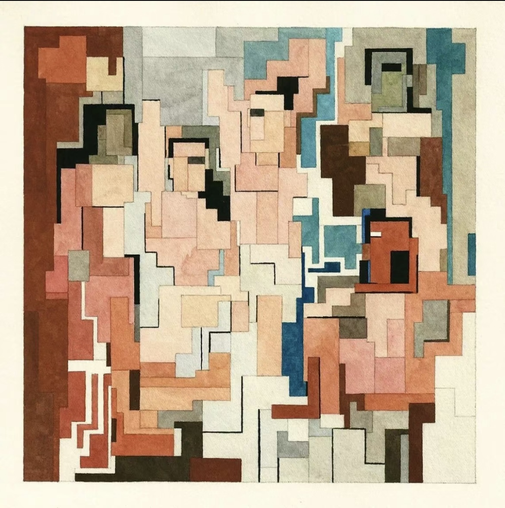

academic slice
Academic
Placeholder for research interests, projects, publications, teaching material, and CV-shaped records.
This page is a public slice of the larger personal site. The deeper map lives in the worldmodel.

Miro Sonacademic slice
Placeholder for research interests, projects, publications, teaching material, and CV-shaped records.
This page is a public slice of the larger personal site. The deeper map lives in the worldmodel.